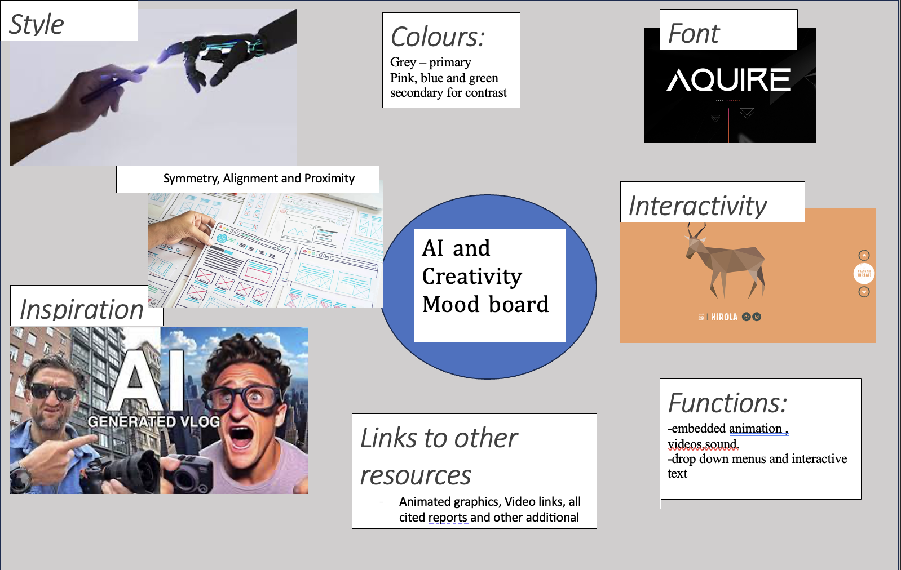

AI tools and their impact on creative media projects - MAD WEEK 2
MAD(A) Week 2 Page - Demographics
Task 1: Identify and Evaluated Websites
Article 1:
We’re tracking heat records in 400 U.S. cities, and you can look up your city.
https://pudding.cool/projects/heat-records /
Audience:
The Page is very clearly designed for American users as from the beginning you need to interact and input an American city to move forward to the heat record statistics. Allows opportunities for different social groups in America to learn about the impact of climate change within their cities.
Navigation and Interaction:
The website doesn’t necessarily involve interaction but allows you to select different cities from across America.
The site is largely easy to navigate.
Uses arrow keys to navigate between pages to display dynamic graphs and infographics.
The Quality of the graphics is high and the navigation between each page is seamless, all the pages are very similar and use a repeated form of design for each page.
Design:
The Page is consistent and uses a repetitive method as every page is largely similar and therefore easier to navigate and understand.
All the text and graphs are consistent in the same location with good proximity applied.
There is a navigation bar across the top of the page so that the reader can tell which page they are on, which is beneficial to users.
Contrast is used as the background is Black and there are bright colours such as pinks and blues used in text and graphics to signify importance and gain user attention.
The Main text is also contrasted enough from the black background to be clear to users.
The pages are all balanced and symmetrical as they all carry a similar level of information and graphs and therefore aren’t overwhelming for users.
Content Design:
The subject matter is significant to each city selected on the homepage gives relevant and in-depth information relevant to global warming, and does well at presenting readable, understandable information to the users so they can gain a greater understanding of the topic.
The content is accompanied by reliable research papers and evidence of other projects, displaying references and acknowledgement.
Overall, the page has been designed so users can follow it clearly and understand the presented information. This article follows a consistent structure where there are interactive features to navigate the page, as well as consistency across all pages in terms of font alignment and proximity which is useful for readers to follow along. The content is largely animated graphics which again helps keep readers interested rather than being all text.
The colour scheming and contrast methods used apply emphasis on the important information put relevance on the severity of the topic and support the point presented to users.
Article 2:
Is TikTok helping artists become commercially successful, or does the medium present a new opportunity worth pursuing?
https://pudding.cool/2022/07/tiktok-story/
Audience:
This page offers a discussion point between the social media app TikTok and the music industry discussion on how the app can make musicians successful.
Clearly designed for those interested in the app and the music industry, and presents information to understand the correlation and the opportunity between the two.
Navigation and Interaction:
The page is designed almost to match the way the TikTok app works by being one single page which scrolls vertically until the end, reflecting the nature of the TikTok app.
In terms of navigation, it is just one page it is just navigated by either arrow keys or the cursor. There is an implemented icon which shows what position on the page the user is.
There are interactive images, videos and text embedded in the page as you navigate up and down through the page.
There are also playable videos spread across the page related to the topic points.
Design:
The app uses contrast using dark colours and Blue and Pink to match the colours of the TikTok app which should be familiar to the readers. Important information and Subheadings are signposted using either the blue or pink colour to draw the reader's attention.
With the main body, the text has enough contrast from the background to be readable to the users.
There is repetition across the page everything Is aligned in the same position on the page and the same fonts and sizing are used for the writing and headings.
Similarly, this helps the page be balanced and symmetrical.
There are multiple interactive graphics which have drop-down menus around them to display different types of statistics to the user, which is useful in terms of the variety of information given.
Content Design:
The content provides insight into the nature of the app and how users particularly musicians can benefit from using the app. Displaying different examples of statistics of artists that went viral on the app.
Providing insight into how the app is successful within the music industry using analytical statistics and case examples to provide evidence and create a narrative on the page.
The article is a large amount of text which is readable but can be difficult to retain attention as there are not many interactive features across the page.
However, the drop-down graphics are beneficial to display information in a different manner.
The text largely follows the subject matter and provides references throughout to other pieces of work which have been used within the page.
Overall, this article presents a page which is reflective of the TikTok app in the way it is aligned vertically, the consistency of colours and fonts across the page as well as embedded videos and motion graphics. There is a large amount of text across the page but is clearly separated by subheadings so users can follow clearly.
Although the page is not as interactive as our first example it reflects a familiar experience to that of the TikTok app in terms of design. Its positioning of text and use of contrast indicate specifically to users the important information and put their narrative across.
Task 2: Consider your audience
The Demographic for our project can be represented by the following table:
Audience Persona Table:
| Age: | 16-60 with Writing level so they can understand the topic and make informed decisions. |
| Gender: | ALL |
| Occupation/Hobbies: | Cinematography, videography, music, and content creation. Interest in Media |
| Needs/Wants: | Tools to support/ enhance content creation |
| Skills: | Camera, Editing and computer skills. |
| Attitude towards AI : | Diverse perspective. (Maybe sceptical or May be highly interested. |
| Education : | Education All levels, with a basic understanding of AI and AI tools |
| Language Proficiency : | Good level of English, as some concepts regarding AI may be complex |
| Audience Action: | Audiences should be able to make informed decisions regarding AI tools based on their goals after reading web pages. |
Audience Personas
Persona 1:

Persona 2:

Task 2: Consider your audience:
Based on the Websites Analysed some features that persona 1 would benefit from would be:
However, Persona 1 would probably Not benefit from:
Task 3 : MoodBoard
The following moodboard depicts the insipiration and thoughts regarding the design prinicples for the project:

My design overall should reflect the nature of the topic, incorporating multimedia concepts whilst remiaing as clear to the user as possible using the same symmetry, proximitry and alignment through out.
In order to represent the data of this topic relevant structures will be the Ladder technique as it helps to uncover the attributes, consequences, and values.
Using Exisiting Data Research will be highly applicable for my topic particularly from research institues such as the harvard business review and other academic sites.
Structure and Design of my page:
1. contrasting structure or navigation – navigation for my page should be repeated and clear for users.
2. different layout, colours, and/or graphics – should include multiple info graphics, videos and colours as the topic is highly relevant to Creativity and media.
3. multimedia choice and/or quality – quality
4. interesting types of interaction – integrated videos and drop-down menus as well as other resources